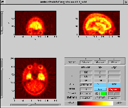
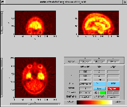

Next: Point Selection
Up: IPS - Interactive Point
Previous: Startup
It is easily seen in Figure 3 that the two images
are not very well aligned, especially a certain amount of rotation in the
sagital and axial views make the two images differ. Since selection of
the same landmarks would likely be easier if the images were roughly
aligned, a method for coarse prealigment is available. Note: In
principle, both images can be prealigned, however memory usage and
calculation time is less if only the low resolution image is
prealigned. The low resolution is typically entered into the program
as the reslice image.
Figure 3:
Initial orientation of the standard and reslice datasets.
|
|
To adjust the orientation of the reslice dataset, the red 'Alignment'
button should be pressed, and one of the three image panes, e.g. the
sagital pane clicked. A zoomed version of the image then appears (left
in Figure 4). Using the keyboard and mouse
- The pointer keys adjusts the image orientation by translation.
- Translation stepsize is adjustable through + and - keys.
- The , and . keys adjusts the image orientation by rotation,
in positive/negative direction.
- Rotation stepsize is adjustable through * and / keys.
- The centre of rotation is selectable using mouse clicking.
Once the image orientation is satisfactory (right
in Figure 4), the window should be
closed using either the keyboard x key or the close button of
the window.
Figure 4:
Orientation of the reslice dataset, before (left) and after
(right) prealignment.
|
|
When prealignment has been applied in all panes, the images should be
roughly aligned (Figure 5).
Figure 5:
Orientation of the standard and reslice datasets after
prealignment.
|
|
Next: Point Selection
Up: IPS - Interactive Point
Previous: Startup
Claus Svarer
2004-07-23
![\includegraphics[width=0.45\textwidth]{images/ips_slice3_std_eye.ps}](img5.png) 
